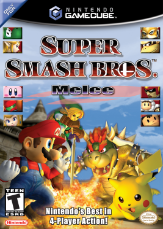

Fighting · 2001
Super Smash Bros. Melee
Twenty-five years of tournament play squeezed out of one launch-window disc.

Cover: Wikipedia: Super Smash Bros. Melee
Facts
- Released
- 2001-11-24
- Genre
- Fighting
- Category
- Fighting
- Platforms
- Nintendo
- Developers
- HAL Laboratory
- Publishers
- Nintendo